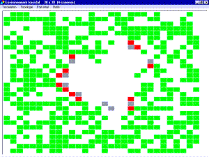

|
List of all the
Cormas models
Alphabetical order
[ABSTRACT] :
Agent Based Simulation Tool for Resource Allocation in a
CatchmenT in Brazil (Pieter van Oel).
[Alamo]
Agricultural Landscape Modelling. Politiques publiques
agricoles et forestieres et transformation des paysages
des Grands Causses au Sud du Massif central (A.
Hofstetter, R.
Lifran).
[Amaz] Comparing different
strategies of land use and their consequences in terms
of Environmental Services in the Amazon (P. Bommel)
[AtollGame]
: AtollGame, a computer-assisted role playing game
supporting equitable groundwater management in Tarawa
atoll (Republic of Kiribati) (A. Dray, P.
Perez, P. dAquino).
[AWARE] : Agent-based Watershed
Analyses for Resource and Economic Sustainability in
South Africa (Stefano
Farolfi).

[AgentsJeux] : tragedy of the commons and prisoners
dilemna (Francois
Bousquet and Christophe
Le Page).
[AutomateVote] : electoral ballot (Francois Bousquet
and Christophe Le
Page).
[Bohol] : Natural Resource
Management of the Municipality of Loon in Bohol,
Philippines (Paolo
Campo).
[BrouteLaForet] :
spatial representations and interactions between
individuals, space and society (Jean-Luc
Bonnefoy).
[Burkina]
(FR): soil quality indicators in Burkina Faso (Serge
Guillobez).
[ButorStar]
(FR): A role-playing game designed to raise students’
awareness of bird conservation and the sensible and
responsible use of reed beds, whilst also serving as a
basis for collective discussion among users on the
sustainable management of their reed beds (R.
Mathevet , C. Le Page, M. Etienne, G. Lefebvre,
S. Proréol, B. Poulin, G. Gigot, A. Mauchamp).
[CatchScape]
(FR): River basins management in north Thailand (Nicolas
Becu, Pascal Perez,
Andrew Walker)
[Cienaga] (SP): Water
quantity and quality of the Ciénaga dam, Jujuy,
Argentina (Grégoire
Leclerc et Pierre Bommel).
[Conway] : the game of life (Francois Bousquet
and Christophe Le
Page).
[ContaMiCuenca] : Game
for water management in Guanacaste, Costa Rica (Spanish
version. Grégoire
Leclerc et Pierre Bommel).
[Cosmos] : A spatially
explicit model to simulate the epidemiology of Cosmopolites
sordidus in banana fields (Fabrice Vinatier).
[DataBase] : Cormas configuration for exchanges with
Access databases by ODBC (Stanislas
Boissau).
[Demo_Aggregates] : Generating
spatial aggregates in Cormas (P. Bommel).
[Demo_Aquifer] : The ground
water diffusion in an aquifer (P. Bommel)
[Demo_Aquifer2: MACCA-GW] :
Replication of MACCA-GW: the ground water diffusion in
an aquifer (P. Bommel)
[Didy] : multiple uses of a
forest ecosystem in Madagascar (Géraldine
Abrami).
[Diffuse] : A simple model of
pheromone diffusion by ants (Pierre Bommel).
[DinamicaParcelas]
(FR) : Dynamics of the Land-use in the Pampa (in
french... Jorge
Corral, Pierre
Bommel).
[Djemiong] : hunting of wild
meat in Cameroon (Christophe
Le Page, Francois
Bousquet and Innocent
Bakam).
[Dps] : spatialized prisoners
dilemma (Christophe Le
Page and Francois
Bousquet).
[Dricol] : emergence of
resource-sharing conventions (Olivier
Thébaud and Bruno
Locatelli).
[Dukunu Mole] : A hybrid
simulator for participatory landscape planning in São
Tomé (Anne
Dray, Christophe
Le Page and Pierre Bommel).
[ECEC] : evolution of
cooperation in an ecological context, a model from
Pepper and Smuts (Christophe
Le Page).
[Echos] : Economic behaviour
analysis of the "Stockbreeding wastewater system" actors
at the Reunion Island (Stefano Farolfi,
Pierre Bommel and
Christophe Le Page).
[FauconColombe] : game theory and prey-predator model (Marion
Valeix).
[FiliereRaphia] : raphia marketing system in Madagascar
(Vestalys
Herimandimby, Elino
Randriarijaona, Francois Bousquet
and Martine Antona).
[FireAutomata] :
diffusion of a forest fire (Christophe Le Page
and Francois
Bousquet).
[FloAgri] : New opportunities
for small farmers of the Amazon (Pierre Bommel and
Plinio Sist).
[ForPast] : spatial
transformations dynamics of sylvo-pastoral systems (Sylvie Lardon
and Pierre Bommel).
[Gammanym] :
Diffusion and Social Networks: a Multi-Agent
System/Network Theory coupled approach (Nazmun N.
Ratna, Anne
Dray, Pascal
Perez, David Newth)
[Gemace] : multiple uses of
wetlands in Camargue, France (Raphaël Mathevet).
[Griffeath] : The cyclic
cellular automaton by David Griffeath (Pierre Bommel).
[iLPF] (POR):
Integracão Lavoura-Pecuária-Floresta na Amazonia (Pierre Bommel,
René Poccard, Amaury Bendahan, in portuguese).
[InteractiveModel]
: A toy model that illustrates the various way of
building GUI (Pierre
Bommel).
[JLB] : spatial transformations
dynamics of forest systems (Jean-Luc
Bonnefoy).
[JuMel] (FR):
economic exchanges and emerging organizations (Juliette Rouchier).
[Kayanza] : firewood in Burundi (Philippe Guizol,
Cleto Ndikumadengue, Francois Bousquet
and Martine Antona).
[MaeSalaep]
(FR) : A role-playing game exploring the relationship
between crop diversification on slopes and the risk of
soil erosion in a small mountain catchment in northern
Thailand (G.
Trébuil, B. Shinawatra-Ekasingh, F. Bousquet, C.
Thong-Ngam).
[MagmaS] : exchange of
stock-farm effluents in Reunion island (Manuel Martin,
Eric Piquet,
Christophe Le Page
and Francois
Guerrin).
[Markets] : Assessing the
performance of different market institutions in West
Africa according to communication systems (Franck Galtier).
[Mejan] : pine encroachment of
natural ecosystems in Lozère, South of France (Michel Etienne
and Christophe Le
Page).
[Mejan, role-game] : a
role-game based on a simplified version of the Méjan
model (Michel
Etienne and Christophe
Le Page).
[MineSet] :
Interactive simulation for sustainable forest management
in the Congo Basin (Anton Bommel,
Claude Garcia
and Anne Dray).
[MiRoya]
: An interactive simulator to understand the biophysical
mechanisms underlying coffee leaf rust epidemics (P.
Bommel).
[Mobe] : regulation of firewood marketing systems in
Niger (Martine
Antona).
[MoPAgrIB] : simulation of
savanna landscape mosaic under shifting cultivation,
North Cameroon (Nicolas
Becu, Marc
Deconchat, Eric
Garine, Kouami Kokou
and Christine
Raimond).
[Njoobari]
(FR): A role-play game on organisation and
coordination within irrigated areas in the Senegal
River valley(O.
Barreteau, F. Bousquet et W. Daré).
[Nong Chok] : Land use
change in a peri-urban area, Bangkok Thailand (Sk. Morshed Anwar
and Frédéric Borne).
[Orizi] (FR):
Small irrigation systems under free management (Pascal Perez
and Nicolas
Becu).
[Pasteur] : sparse resource sharing by herds in
sahelian area (Alassane
Bah and Patrick
dAquino).
[Pat] (FR): A
role-playing game designed specifically for a commune in
the mountainous province of Bac Kan (northern Vietnam)
to inform research into how rules governing access to
resources evolve when those resources come under
increasing pressure (S.
Boissau, F. Sempé).
[PlotsRental] : plot
renting by individual contracts or by centralized
auction system (Francois
Bousquet and Christophe
Le Page).
[Potlatch] : economic
exchanges and emerging organizations (Juliette Rouchier).
[Project
Management] : The added value of ABM simulation to
really support the management of Software (Davy
de Medeiros Baia).
[Pursuit] : prey-predator
model (Christophe Le
Page and Francois
Bousquet).
[ReefGame] :
a role-playing game to explore livelihood alternatives
in traditional fishing communities in Bolinao
(Philippines) (Deborah
Cleland, Anne Dray, Pascal Perez,
A.
Trinidad, R. Geronimo
[ReHab] : Re(sources)Hab(itat),
computer-assisted role-playing game (Christophe Le Page).
[RobotsFourrageurs] : ore-collecting robots (Francois Bousquet
and Christophe Le
Page).
[Sabah] : plantation development among small farmers in
Malaysia (Philippe
Guizol).
[SaintGeorges] : pasture and overgrowing brushwood in a
village of Lozere, France (Emanuel
Lieurain).
[Samba] : land use in North Vietnam (Stanislas Boissau,
Jean-Christophe
Castella).
[SavaneAgents] : landscape dynamics, agent-based
version (Denis
Gautier and Francois
Bousquet).
[SavaneEspace] : landscape dynamics,
geographic-entity-based version (Denis Gautier
and Francois
Bousquet).
[SeaLab] : homing-like reproductive strategies (Christophe Le Page).
[SelfCormas]
(FR) : decentralized organization of land-use in Senegal
(Patrick dAquino,
Alassane Bah, Francois Bousquet
and Christophe Le
Page).
[Sequia] : Adaptation of
livestock producers to climate change in Uruguay (see
also the page in
Spanish. P.
Bommel).
[Shadoc]
(FR): organization and coordination within irrigation
systems in Senegal (Olivier
Barreteau).
[SimAmph] :
policy responses to the use of amphetamine-type
stimulants and related harm amongst young Australians (Anne Dray, Pascal Perez,
D. Moore, P. Dietze, G. Bammer, R. Jenkinson, C.
Siokou, R. Green, S. Hudson, L. Maher)
[SimDrug] :
Exploring the complexity of the heroin drug use in
Melbourne (Anne Dray,
Pascal Perez)
[SimPolilla]
: A cellular automaton to describe a pest invasion
within the northern Andes (Francois
Rebaudo, Véronica Crespo-Pérez and Olivier
Dangles)
[Sinuse] : distributed
interactions between an underwater table and its users (Sarah
Feuillette).
[SIS] : Epidemiology system of
Susceptible - Infectious (Bruno Bonté).
[SpatioDyn]
(FR): spatial dynamics modelling with GIS and MAS (Muriel Bonin
and Christophe Le
Page).
[Spiders] : net building by social spiders, a model
from Bourjot and Chevrier (Christophe Le Page).
[Stratagenes]
(FR): negotiation for phytogenetic resource local
management in Madagascar (Sigrid Aubert
and Christophe
Le Page).
[SugarRice]
(FR): In north-eastern Thailand, farmers are replacing
rice with sugarcane in their upland rice fields. What
are the causes and effects of this change in land use?
Role-play is used to explore future scenarios with the
villagers (N. Suphanchaimart, F. Bousquet, I.
Patamadit, C. Wongsamun, G. Trébuil).
[SugarScape] : the famous
Epstein and Axtell model (Francois Bousquet).
[SylvoPast] : Sylvo-pastoral
management and wildfire prevention in Mediterranean
forests (Michel
Etienne and
Christophe Le Page).
[SylvoPast, role-game] : a
role-game, built with Excel (© Microsoft), based on the
SylvoPast model (Michel Etienne).
[TransAmazon] : Modelling
the dynamics of the Pioneers Fronts of the Transamazon
Highway Region (Thierry
Bonaudo, Jean-Francis
Tourrand et Pierre
Bommel).
[TestResourceExchange] : resource sharing by Cormas
entities (Francois
Bousquet).
[TestSpatialEntity] : examples of
Cormas aggregates and partitions (Christophe Le Page).
[VarzeaViva]
: Livelihoods of local communities in an Amazonian
floodplain coping with Global Changes (Marie-Paule
Bonnet et Pierre Bommel).
[WolfSheep Predation]
: Population dynamics between preys and predators (Moira Zellner et
Pierre Bommel).
[WsErosion] : soil erosion risk and agricultural
diversification in a Northern-Thailand watershed (Guy Trébuil
and Christian
Baron).
[Zambeze] : land-use dynamics in the Zambeze valley (Quinton
Zunga, Antoine Vagnini and Christophe Le Page).
|